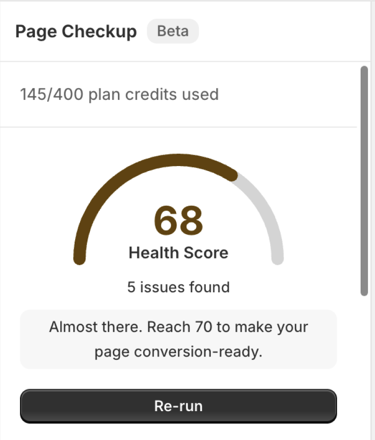
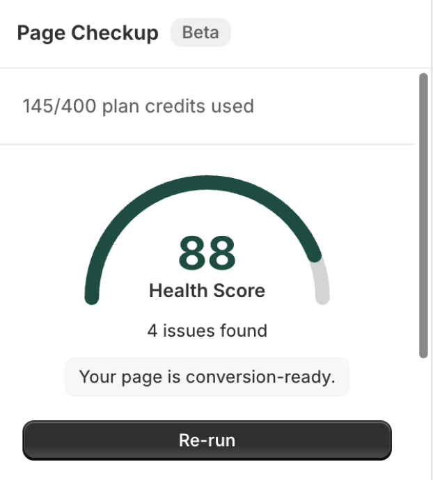

New in PageFly
Page
Checkup
Score your page. Fix what's costing you conversions.
Page Checkup
Beta
Before
After
Hero has no image
No CTA button
No product image
Image hero added
Clear CTAs added
Countdown timer added


Health score
68
+20
Almost there · reach 70
Conversion-ready